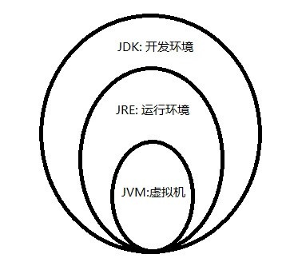

Java 基础梳理
Table of Contents
1 前言
本篇博客主要是对 Java 基础学习的一次梳理， 主要是对一些在其他语言中未接触过或有区别的内容
的一次汇总。
如果你是来找基础教程的， 建议还是买本书或者在网上找一篇更详细的教程， 那会比我描述的清楚的多。
2 语法无关内容
Java 学习中有一些容易让人疑惑而与语法无关的内容， 这些内容教材上提到的少， 而平时又经常接触。
这里列出来我接触到的内容， 首先是 Java 版本和 JDK 版本的关系。
Java 版本和 JDK 版本并不是直接对应的关系， 这里是几个例子：
| Java 版本 | JDK 版本 |
|---|---|
| Java | 1.02 - 1.1 |
| Java 2 | 1.2, 1.3, 1.4 |
| Java 5.0 | 1.5 |
| Java 8 | 1.8 |
感觉目前常用的应该是 Java 8, 所以记住 Java 8 对应的 JDK 版本是 1.8 就好。
然后是几个名词和它们之间的关系：
| 名词 | 完整名称 | 含义 |
|---|---|---|
| JVM | Java Virtual Machine | Java 虚拟机 |
| JRE | Java Runtime Environment | Java 运行环境， 包含了 JVM |
| JDK | Java Development Kit | Java 开发工具包， 包含了 JRE |
从这张图看的话就更直观：

最后是 文件命名规则, Java 文件命名不能随便命名， 需要遵循以下规则：
- Java 保存的文件名必须与类名一致
- 如果文件中只有一个类， 文件名必须与类名一致
- 一个 Java 文件中只能有一个 public 类
- 如果文件中不止一个类， 文件名必须与 public 类名一致
- 如果文件中不止一个类， 而且没有 public 类， 文件名可与任一类名一致
3 原始数据类型和引用
Java 关键字中有 8 个代表 原始数据类型, 这些原始数据类型在 java.lang 还存在与之对应的 包装类型.
| 数据类型 | 包装类型 | 位数 | 值域 |
|---|---|---|---|
| boolean | Boolean | ? | true/false |
| char | Character | 16 | 0 ~ 65535 |
| byte | Byte | 8 | -128 ~ 127 |
| short | Short | 16 | -32768 ~ 32767 |
| int | Integer | 32 | -2147483648 ~ 2147483647 |
| long | Long | 64 | -很大 ~ +很大 |
| float | Float | 32 | 范围规模可变 |
| double | Double | 64 | 范围规模可变 |
与 原始数据类型 相对应的是 引用, 两者的主要区别是： 原始数据类型 保存实际的值， 而 引用 保存 对象的引用.
复杂举例说明：
- 假设存在 原始数据类型 变量
A和 引用 变量B. - 保存变量
A的值的内存为A_RAM, 而保存变量B的值的内存为B_RAM. - 当我们赋值给变量
A时， 赋予的值会保存到A_RAM中。 - 当我们赋值给变量
B时， 会在内存中创建一个区域用于保存我们要赋予的值， 假设这个区域叫做O_RAM. 然后Java会把代表O_RAM的引用的 值 保存到B_RAM中。
可以看到， 和变量 A 相关的内存只有 A_RAM, 而和变量 B 相关的有 B_RAM 和 O_RAM.
原始数据类型 和 引用 变量的行为也因此存在区别：
- 两个原始数据类型的变量是互不干扰的， 修改一个的值不会影响到另一个
- 假如两个引用变量引用的是同一个对象， 如果其中一个引用变量操作对象修改了它的值， 那么另一个引用也会发生修改
这有好处也有坏处， 当然了， 只要在使用的时候明白这一点， 应该也容易避免意外情况的发生。
一些注意事项：
Java没有无符号数， 因此无符号右移请使用>>>.- 定义
float类型的变量需要加f后缀， 如：float f = 32.45f, 否则小数会默认当做double处理 - 布尔类型变量的值只有
true/false, 不能使用0, 1, null等值代替。 需要布尔值的地方只能使用布尔类型的值或 使用布尔表达式 - 数值类型(包括 char)的默认值为
0, 布尔类型默认为false, 引用默认为null - 使用
==判断两个原始数据类型的 值 是否相同， 判断两个引用是否为引用 同一个对象 - 如果要比较两个引用的对象的值是否相等， 请使用
equals方法 - 隐式类型转换 只能 发生在 小 => 大 的情况下， 比如
byte => int - 原始数据类型没有方法， 如果需要使用相关的方法， 请使用对应的 包装类型
Java 5.0开始引入了autoboxing机制， 允许在 参数、 返回值、布尔表达式、 数值运算 和 赋值等地方自动完成 原始数据类型和对应的包装对象的转换
4 数组和字符串
Java 中数组类型的变量属于 引用, 有如下几种声明和创建方式：
// 声明数组 dataType[] arrayRefVar; // 首选的方法 dataType arrayRefVar[]; // 效果相同，但不是首选方法 // 创建数组 dataType[] arrayRefVar = new dataType[arraySize]; dataType[] arrayRefVar = {value0, value1, ..., valuek}; // 只能在声明的同时使用 dataType[] arrayRefVar = new dataType[]{value0, value1, ..., valuek};
数组的 length 属性表示这个数组中元素的个数。
而 Java 中 字符串 不是 数组, 不能像 str[i] 这样操作。
同时 String 也不是关键字， 而是一种类型， 位于 java.lang 中的类型。
Java 中字符串的一个强大的特性就是可以直接和其他类型的变量相 加, 如：
public class Test { public static void main(String[] args) { String str = "123" + 45 + true + 3.4 + new Test(); System.out.println(str); } }
上述代码的输出为：
12345true3.4Test@15db9742
5 继承和多态
Java 中的继承机制并不复杂， 一般语法就是 class A extends B.
一些基本规则和其他语言也差不多， 比如子类可以继承父类的公有或保护成员等。
但是也还有一些我在其他语言中没有接触到的东西：
- 可以通过将类声明为
final的或者让类只拥有private的构造方法可以让类无法继承
PS: 只有 private 的构造方法的类也不能实例化
同时， 子类可以覆盖父类的 方法, 要求是：
- 要覆盖的方法的参数和返回值类型都必须和父类的相同
- 不能降低方法的存取权限， 只能保持一样或更加开放
public class Parent { public void method() {} } public class Child extends Parent { @Override public void method() {} }
如上， Child 继承并覆盖了父类的 method, @Override 是一个注释类， 不要也没有问题， 但是加上更清楚。
PS: java 不允许多重继承， 也就是说一个类只能继承一个类
对于 多态, 其实并不复杂， 简单的说的话就是允许 父类类型 的引用引用 子类类型 的对象。
Parent obj = new Child();
就是这样， 这就是多态， 在函数参数， 赋值， 返回值等地方都可以使用多态。
多态使用中需要注意的问题：
- 父类类型的引用只能调用父类中存在的那些方法， 不能调用子类中新增的方法
编译器根据 引用类型 来判断有哪些 method 可以调用， 而不是 Object 实际的类型。
6 重载
首先需要明白的一点是： 重载不是多态.
重载运行一个类中存在两个 名称 相同的方法， 这两个方法的 参数 必然不一样。
重载的基本规则：
- 可以修改返回值类型
- 不能只修改返回值类型
- 可以修改存取权限
如果你只修改了参数的 名字 而没有更改 类型 或 顺序 或 数量 是没有用的， 编译器不关心参数的名字。
7 抽象类
假如你希望一个 方法 必须被子类覆盖， 那么你可以用 abstract 这个关键字来修饰它。
PS: 可以通过将子类也声明为 abstract 的而不去实现抽象方法， 放到这个子类的子类去实现（迟早都要实现的）
但是， 只有 抽象类 才能拥有 抽象方法.
抽象方法 不能有实体， 需要这样定义：
public abstract class Example { public abstract method(); }
你需要省略抽象方法的 方法主体.
PS: 只有抽象方法允许这样做， 其他的方法和类的定义， 既是主体为空也必须写出来， 不能省略 {}
而 抽象类 不能被实例化， 但是你依然可以在抽象类中定义 构造方法, 这些构造方法绘制子类实例化时调用。
子类 实例化时， 会先调用 父类 的构造方法， 然后在调用自己的。
8 接口
接口不是类.
由于 java 不允许多重继承， 因此需要一些特殊的方式来扩展 java 的类型系统。
而 接口 可以起到这一作用， 虽然 接口不是类, 但是 接口 可以使用多态。
public interface Pet { void beFriendly(); void play(); } public class A implements Pet { public void beFriendly() {} public void play() {} } Pet p = new A(); // 多态的使用
接口的声明方式和 类 很相似， 但是两者是不同的。 同时 接口 内部的方法默认为 public abstract 型的。
实现接口 的类必须实现 接口 中定义的方法， 和继承不一样， 一个类可以实现 多个接口.
public class A implements IA, IB, IC {}
9 异常
java 中使用 throw 抛出异常， 使用 throws 声明要抛出的远程， 使用 try/catch 捕获处理异常。
所有的异常都是 Exception 的子类， 除了 RuntimeException 及其子类类型的异常以外， 其他类型的异常都要
求捕获处理
public class Example { public void method() throws ExceptionA, ExceptionB { throw ExceptionA(); throw ExceptionB(); } }
这是声明可能要抛出的异常的方式， 如果 ExceptionA 是 ExceptionB 的父类， 那么可以只声明 ExceptionA.
当你在其他方法中使用 Example.method 时， 你必须使用 try/catch 捕获可能要抛出的异常并进行处理。
try { e = new Example(); e.method(); } catch (ExcepthonA ex) { } catch (ExcepthonB ex) { }
如果你不想自己处理异常， 你也可以将可能要抛出的异常写在你的方法声明上， 这样， 你就可以让你的函数的调用者去处理这些异常了 @_@
public void myMethod() throws ExceptionA, ExceptionB { e = new Example(); e.method(); }
另外， try/catch 语句后还可以接 finally 块， finally 块中的内容必然会执行， 哪怕 try/catch 中存在 return 语句。
10 静态成员和常量
Java 中， 你可以使用 static 修饰类的 内部成员, 被 static 修饰的内部成员属于 静态成员.
PS: 没有静态类， 但可以有静态内部类
其中：
- 静态变量被所有实例共享
- 静态方法不能访问非静态成员
静态成员 可以通过 类名.成员名 的方式调用， 也可以用 实例引用名.成员名 的方式调用。
但是都声明为 静态 了， 一般还是用 类名 访问比较好。
使用关键字 final 修饰的变量不能被修改：
final int size = 3;